Euler angles欧拉角
欧拉角是Leonhard Euler引入的三个角，用于描述刚体相对于固定坐标系的方向。[1]
它们还可以表示物理学中移动参考系的方向，或三维线性代数中一般基的方向。后来，彼得·古思里·泰特（Peter Guthrie Tait）和乔治·H·布莱恩（George H.Bryan）引入了另一种形式，用于航空和工程领域。
🔎
frame of reference：参考坐标系
basis：基
Chained rotations equivalence 链式旋转等效


👆 从已知参考方向开始，使用特定的内旋序列，可以达到任何目标方向，其大小为目标方向的欧拉角。本例使用z-x′-z〃序列。
欧拉角可以通过基本几何或旋转组合来定义。几何定义表明，三个组合元素旋转（围绕坐标系的轴旋转）足以到达任何目标坐标系。
❓ 基本几何定义和组合旋转定义有什么区别？
三个元素旋转可以是外旋（围绕原始坐标系的轴xyz旋转，假设其保持不变），也可以是内旋（围绕旋转坐标系的轴XYZ旋转，与运动物体保持一致，在每次元素旋转后改变其方向）。
🔎
extrinsic rotations：外旋
intrinsic rotations：内旋
欧拉角通常表示为α、β、γ或ψ、θ、φ。不同的作者可以使用不同的旋转轴集来定义Euler角度，或者为相同的角度使用不同的名称。因此，任何使用欧拉角的讨论都应在其定义之后进行。
假设不会同时用两种不同约定来定义旋转轴（内旋或外旋），存在十二种可能的旋转轴序列，分为两组：
- Proper欧拉角（z-x-z，x-y-x，y-z-y，z-y-z，x-z-x，y-x-y）
- Tait–Bryan角（x-y-z，y-z-x，z-x-y，x-z-y，z-y-x，y-x-z）。
Tait–Bryan角也称为卡丹角、航海角、行进方向，高度，边坡、或偏航，俯仰，和横滚。有时，这两种序列都被称为“欧拉角”。在这种情况下，第一组的序列称为proper欧拉角或经典欧拉角。
Proper Euler angles Proper欧拉角

👆 Proper欧拉角几何定义：固定坐标系（x、y、z）、旋转坐标系（X、Y、Z）、交点线（N）
 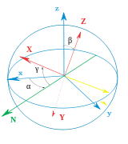
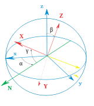
👆 左：万向节组，显示z-x-z旋转序列。底座为外部坐标第。内部轴为红色。右图：一个简单的图，在图显示相似的欧拉角。
📌 以下内容全部假设旋转顺序为z-x-z
几何定义
The axes of the original frame are denoted as x, y, z and the axes of the rotated frame as X, Y, Z. The geometrical definition (sometimes referred to as static) begins by defining the line of nodes (N) as the intersection of the planes xy and XY (it can also be defined as the common perpendicular to the axes z and Z and then written as the vector product N = z \times Z). Using it, the three Euler angles can be defined as follows:
原始坐标系的轴表示为x，y，z，旋转框架的轴表示为X，Y，Z.几何定义（有时称为静态）首先将交点线（N）定义为平面xy和XY的相交的线（也可以定义为同时与轴z轴和Z轴垂直的线，因此写为向量积 \(N=z \times Z\)）。使用它，三个欧拉角可以定义如下：
✅ line of nodes：交点线
- \(\alpha\)（或\(\varphi\)）是x轴和N轴之间的有符号角度（x约定–也可以在y和N之间定义，称为y约定）。
📌
A轴与B轴之间的夹角，另一种表达方式是，以\(A\times B\)为轴，从A到B的旋转角度
N在xy平面上，因此x与N的夹角可以看作是以z为轴在xy平面上的转动
- \(\beta\)（或\(\theta\)）是z轴和Z轴之间的角度。
📌
只有第二次旋转会导致z->Z
- \(\gamma\)（或\(\psi\)）是N轴和X轴之间的有符号角度（X约定）。
📌
N在XY平面上，因此N与X的夹角可以看作是以Z为轴在XY平面上的转动
仅当两个参照系具有相同的惯用手时，才定义两个参照系之间的欧拉角。
内旋
内旋是围绕附着到移动物体的坐标系XYZ的轴发生的基本旋转。因此，它们在每次元素旋转后都会改变方向。XYZ系统会旋转，而xyz是固定的。三个内旋组合可使XYZ达到任何目标方向。
📌
初始时，XYZ和xyz重叠
Euler angles can be defined by intrinsic rotations. The rotated frame XYZ may be imagined to be initially aligned with xyz, before undergoing the three elemental rotations represented by Euler angles. Its successive orientations may be denoted as follows:
欧拉角可以通过内旋序列来定义。旋转的后的XYZ坐标系可以想象为先让XYZ与xyz对齐，然后经历由欧拉角表示的三个元素旋转。其连续方向可表示如下：
- x-y-z, or x0-y0-z0 （初始值）
- x′-y′-z′, or x1-y1-z1 （第一次旋转后）
- x″-y″-z″, or x2-y2-z2 （第二轮后）
- X-Y-Z, or x3-y3-z3 （最终）
📌
以哪个为轴旋转，那个轴旋转前后不变，因此，z=z',z''=Z,x'=x''
For the above-listed sequence of rotations, the line of nodes N can be simply defined as the orientation of X after the first elemental rotation. Hence, N can be simply denoted x′. Moreover, since the third elemental rotation occurs about Z, it does not change the orientation of Z. Hence Z coincides with z″. This allows us to simplify the definition of the Euler angles as follows:
对于上面列出的旋转序列，交点线N可以简单地定义为第一个元素旋转后X的方向。因此，N可以简单地表示为x′。此外，由于第三次元素旋转发生在Z附近，因此不会改变Z的方向。因此，Z与z〃重合。这使我们可以简化欧拉角的定义，如下所示：
📌
N可以简单地表示为x′: 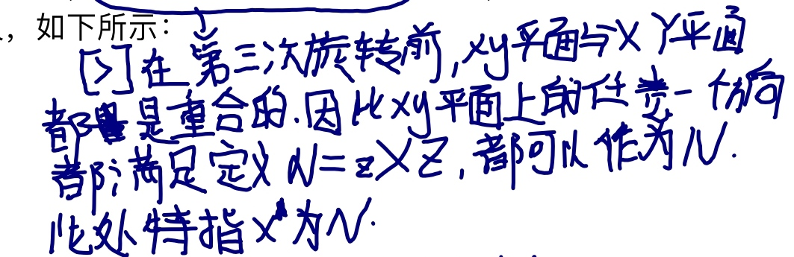
- α（或\(\varphi\)）表示绕z轴旋转，
📌
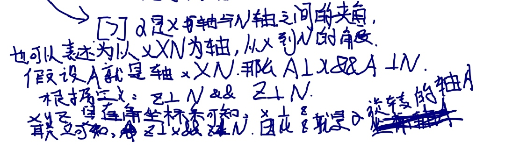
-
β（或\(\theta\)）表示绕x′轴旋转，
-
γ（或\(\psi\)）表示绕z〃轴旋转。
📌
同理，z是γ的旋转轴，Z=z''
外旋
Extrinsic rotations are elemental rotations that occur about the axes of the fixed coordinate system xyz. The XYZ system rotates, while xyz is fixed. Starting with XYZ overlapping xyz, a composition of three extrinsic rotations can be used to reach any target orientation for XYZ. The Euler or Tait–Bryan angles (α, β, γ) are the amplitudes of these elemental rotations. For instance, the target orientation can be reached as follows (note the reversed order of Euler angle application):
外旋是围绕固定坐标系xyz的轴发生的基本旋转。XYZ系统会旋转，而xyz是固定的。从XYZ重叠xyz开始，三个外旋的组合可使XYZ达到任何目标方向。Euler角或Tait–Bryan角（α、β、γ）是这些元素旋转的幅度。例如，目标方向可按如下方式实现（注意应用Euler角的相反顺序）：
📌
注意应用Euler角的相反顺序：
内旋和外旋的顺序不一样
内旋：α->β->γ
外旋：γ->β->α
-
XYZ系统绕z轴旋转γ。X轴现在与x轴成角度γ。
-
XYZ系统再次旋转，但这次绕x轴旋转β。Z轴现在与z轴成角度β。
-
XYZ系统第三次绕z轴旋转角度α。
总之，三个元素的旋转发生在z、x和z附近。事实上，这个序列通常表示为z-x-z（或3-1-3）。与Proper Euler角和Tait–Bryan角关联的旋转轴集通常使用此符号命名（有关详细信息，请参见上文）。
符号、范围和约定
通常根据右手法则定义角度。也就是说，当它们从轴的正方向上看显示顺时针时，它们具有正值；当旋转显示为逆时针时，它们具有负值。相反的惯例（左手法则）很少被采用。
关于范围（使用区间表示法）：
-
对于α和γ，范围定义为模2π弧度。例如，有效范围可以是[−π, π].
-
对于β，范围包括π弧度（但不能说是模π）。例如，它可以是[0， π] 或[−π/2, π/2].
❓
但不能说是模π:?
The angles α, β and γ are uniquely determined except for the singular case that the xy and the XY planes are identical, i.e. when the z axis and the Z axis have the same or opposite directions. Indeed, if the z axis and the Z axis are the same, β = 0 and only (α + γ) is uniquely defined (not the individual values), and, similarly, if the z axis and the Z axis are opposite, β = π and only (α − γ) is uniquely defined (not the individual values). These ambiguities are known as gimbal lock in applications.
角度α、β和γ是唯一确定的，但xy和XY平面相同的奇异情况除外，即z轴和Z轴方向相同或相反。事实上，如果z轴和Z轴相同，则β=0且只有（α+γ）是唯一定义的（不是单个值），并且，类似地，如果z轴和Z轴相反，则β=π且只有（α）− γ） 是唯一定义的（不是单个值）。这些歧义在应用程序中称为万向节锁。
📌
角度α、β和γ是唯一确定的：α、β、γ是独立的
（α）− γ） 是唯一定义的：β为定值，α和γ不独立，这种情况称为万向节死锁
Proper欧拉角的旋转轴有六种可能的序列。在所有这些轴中，第一和第三旋转轴相同。六种可能的顺序是：
-
z1-x′-z2″ (内旋) or z2-x-z1 (外旋)
-
x1-y′-x2″ (内旋) or x2-y-x1 (外旋)
-
y1-z′-y2″ (内旋) or y2-z-y1 (外旋)
-
z1-y′-z2″ (内旋) or z2-y-z1 (外旋)
-
x1-z′-x2″ (内旋) or x2-z-x1 (外旋)
-
y1-x′-y2″ (内旋) or y2-x-y1 (外旋)
进动、章动和内旋
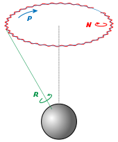
👆 Euler basic motions of the Earth. Intrinsic (green), Precession (blue) and Nutation (red) 地球的基本运动。内旋（绿色）、进动（蓝色）和章动（红色）
Precession, nutation, and intrinsic rotation (spin) are defined as the movements obtained by changing one of the Euler angles while leaving the other two constant. These motions are not expressed in terms of the external frame, or in terms of the co-moving rotated body frame, but in a mixture. They constitute a mixed axes of rotation system, where the first angle moves the line of nodes around the external axis z, the second rotates around the line of nodes N and the third one is an intrinsic rotation around Z, an axis fixed in the body that moves.
进动、章动和内旋（自旋）被定义为改变其中一个欧拉角而保持另两个不变的运动。这些运动不是用外部框架表示的，也不是用共同运动的旋转体框架表示的，而是用一种混合物表示的。它们构成混合旋转轴系统，其中第一个角度围绕外部轴z移动交点线，第二个角度围绕交点线N旋转，第三个角度围绕Z旋转，Z轴固定在移动的主体中。
静态定义意味着：
-
α（进动）表示绕z轴旋转，
-
β（章动）表示绕N或x′轴旋转，
-
γ（内旋）表示绕Z轴或z〃轴的旋转。
如果β为零，则不存在关于N的旋转。因此，Z与z重合，α和γ表示围绕同一轴（z）的旋转，且最终方向可通过围绕z的单个旋转获得，旋转角度等于α+γ。
作为一个例子，考虑顶部。顶部围绕其自身的对称轴旋转；这与它的内旋相对应。它也围绕其枢轴旋转，其质心围绕枢轴旋转；这种旋转是进动。最后，顶部可以上下摆动；倾角就是章动角。地球的运动也可以看到同样的例子。
虽然这三种运动都可以在某一坐标系中用系数恒定的旋转算子来表示，但它们不能同时用这些算子来表示。给定一个参考系，其中最多有一个是无系数的。一般来说，只有进动可以表示为空间基上的矩阵，而不依赖于其他角度。
These movements also behave as a gimbal set. If we suppose a set of frames, able to move each with respect to the former according to just one angle, like a gimbal, there will exist an external fixed frame, one final frame and two frames in the middle, which are called "intermediate frames". The two in the middle work as two gimbal rings that allow the last frame to reach any orientation in space.
这些运动还表现为万向节装置。如果我们假设一组框架能够像一个万向节一样根据一个角度来移动前者，则将存在一个外部固定框架、一个最终框架和中间两个框架，这被称为“中间框架”。中间的两个工作为两个万向环，允许最后一个框架在空间中到达任何方位。
泰特-布赖恩角
另见：飞机主轴

👆 泰特-布莱恩角。z-y′-x〃序列（内旋；N与y′重合）。角度旋转序列为ψ，θ，φ。注意，在这种情况下，ψ>90°，θ为负角度。
第二种形式被称为泰特-布莱恩角，以Peter Guthrie Tait 和George H. Bryan命名。这是通常用于航空航天应用的惯例，因此零度仰角表示水平姿态。Tait–Bryan角表示飞机相对于世界坐标系的方向。在处理其他车辆时，可以使用不同的轴约定。
定义
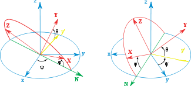
👆 泰特-布莱恩角。z-x′-y〃序列（内旋；N与x′重合）
Tait–Bryan角使用的定义和符号与上述适用于Euler角的定义和符号类似（几何定义、内旋定义、外旋定义）。唯一的区别是，Tait–Bryan角表示围绕三个不同轴（例如x-y-z或x-y′-z〃）的旋转，而Proper Euler角对第一个和第三个元素旋转（例如z-x-z或z-x′-z〃）使用相同的轴。
这意味着几何构造中交点线的定义不同。在Proper欧拉角情况下，它被定义为两个同源笛卡尔平面之间的交线（当欧拉角为零时平行；例如xy和XY）。在Tait–Bryan角的情况下，它被定义为两个非同源平面的交点（当Euler角为零时垂直；例如xy和YZ）。
❓
笛卡尔平面？
为什么旋转轴不同会导致line of nodes的定义不同？
为什么要定义line of nodes?
约定
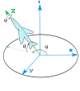
👆 飞机的机载和地面跟踪站的机载ENS轴的Heading, elevation and bank（Z-Y′-X〃）。固定参考坐标系x-y-z表示跟踪站。机载轴Y和Z未显示。X以绿色显示。此图不符合RHS规则：y轴必须反转为正角度符合RHS。
📌
RHS:右手坐标系法则
三个元素旋转可以围绕原始坐标系的轴发生，该坐标系保持不变（外旋），或者围绕旋转坐标系的轴发生，旋转坐标系的轴在每个元素旋转后改变其方向（内旋）。
Tait–Bryan角度的旋转轴序列有六种选择。六种可能的顺序是：
-
x-y′-z″ (内旋) or z-y-x (外旋)
-
y-z′-x″ (内旋) or x-z-y (外旋)
-
z-x′-y″ (内旋) or y-x-z (外旋)
-
x-z′-y″ (内旋) or y-z-x (外旋)
-
z-y′-x″ (内旋) or x-y-z (外旋): the intrinsic rotations are known as: yaw, pitch and roll 内在旋转被称为：yaw, pitch 和 roll
-
y-x′-z″ (内旋) or z-x-y (外旋)
📌
内旋和外旋的顺序是反的
符号和范围
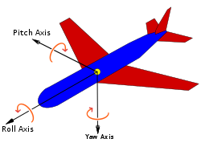
👆 根据航空标准DIN 9300定义的飞机主轴。请注意，零度角时，固定坐标系和移动坐标系必须重合。因此，该规范还将强制定义了参考系统中的兼容轴约定
泰特-布莱恩公约广泛应用于工程中，有着不同的目的。在选择移动轴和固定轴的应用中，有几种轴约定，这些约定决定了角度的符号。因此，必须仔细研究每种情况下的角度符号。
📌
轴约定：特定的旋转轴顺序
角度ψ和φ的范围是2π弧度。对于θ，范围是π弧度。
备选名称
These angles are normally taken as one in the external reference frame (heading, bearing), one in the intrinsic moving frame (bank) and one in a middle frame, representing an elevation or inclination with respect to the horizontal plane, which is equivalent to the line of nodes for this purpose.
这些角度通常在外部参考坐标系（航向、方位）中取一个，在内部移动坐标系（bank）中取一个，在中间框架中取一个，表示相对于水平面的高程或倾角，相当于用于此目的的交点线。
❓
这一段没看懂
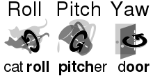
👆 记住角度名称的助记符
对于飞机来说，如果按照正确的顺序绕其主轴旋转三次就可以得到特定角度的坐标系。偏航将获得轴承，俯仰将产生仰角，滚转将产生倾斜角度。因此，在航空航天中，它们有时被称为偏航、俯仰和滚转。请注意，如果以任何其他顺序旋转，或者旋转前飞机轴处于不与参考坐标系相等的其它任何位置，则这套名称不适用。
Tait–Bryan angles, following z-y′-x″ (intrinsic rotations) convention, are also known as nautical angles, because they can be used to describe the orientation of a ship or aircraft, or Cardan angles, after the Italian mathematician and physicist Gerolamo Cardano, who first described in detail the Cardan suspension and the Cardan joint.
Tait–Bryan角，遵循z-y′-x〃（内旋）惯例，也被称为海角，因为它们可以用来描述船只或飞机的方向，或者卡丹角，以意大利数学家和物理学家Gerolamo Cardano的名字命名，他首先详细描述了Cardan suspension和Cardan joint。
给定坐标系的角度
A common problem is to find the Euler angles of a given frame. The fastest way to get them is to write the three given vectors as columns of a matrix and compare it with the expression of the theoretical matrix (see later table of matrices). Hence the three Euler Angles can be calculated. Nevertheless, the same result can be reached avoiding matrix algebra and using only elemental geometry. Here we present the results for the two most commonly used conventions: ZXZ for proper Euler angles and ZYX for Tait–Bryan. Notice that any other convention can be obtained just changing the name of the axes.
一个常见的问题是求给定坐标系的欧拉角。获取它们的最快方法是将三个给定向量写成矩阵的列，并将其与理论矩阵的表达式进行比较（见后面的矩阵表）。因此，可以计算三个欧拉角。然而，避免使用矩阵代数和仅使用元素几何也可以得到相同的结果。这里我们给出了两种最常用的约定的结果：ZXZ表示适当的欧拉角，ZYX表示Tait–Bryan。请注意，只要更改轴的名称，就可以获得任何其他约定。
📌
三个给定向量：XYZ在xyz坐标系中的坐标向量
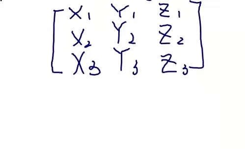
理论矩阵：见6.1节
Proper欧拉角
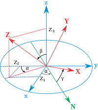
👆 Z向量的投影

👆 Y向量的投影
假设一个坐标系的单位向量（X，Y，Z）由其坐标给出，如主图所示，可以看出：
$$ \cos(\beta )=Z_{3}. $$
又由于
$$ \sin ^{2}x=1-\cos ^{2}x, $$
定义\(\displaystyle 0<x<\pi \) 我们得出
$$ \sin(\beta )={\sqrt {1-Z_{3}^{2}}}. $$
As \(Z_{2}\) is the double projection of a unitary vector,
因为\(Z_{2}\)是酉向量的双重投影，
❓
酉向量？
$$ \cos(\alpha) \cdot \sin(\beta) = -Z_2, \cos(\alpha) = -Z_2 / \sqrt{1 - Z_3^2}. $$
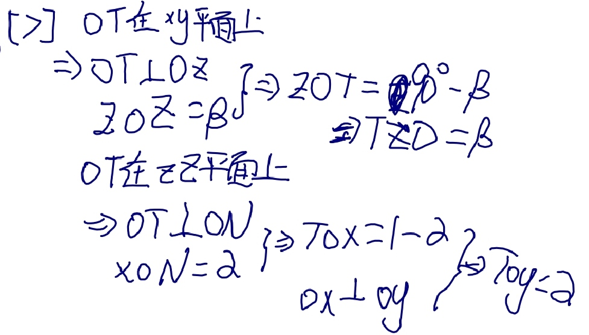
There is a similar construction for \(Y_{3}\), projecting it first over the plane defined by the axis z and the line of nodes. As the angle between the planes is \(\pi /2-\beta\) and \(\cos(\pi /2-\beta )=\sin(\beta )\), this leads to:
\(Y_{3}\)也有类似的构造，首先将其投影到由z轴和交点线定义的平面上。由于平面之间的角度为\(\pi/2-\beta\)，又\(\cos（\pi/2-\beta）=\sin（\beta）\)，得出：
$$ \sin(\beta )\cdot \cos(\gamma )=Y_{3}, \cos(\gamma )=Y_{3}/{\sqrt {1-Z_{3}^{2}}} $$
最后，使用反余弦函数，
$$ {\displaystyle \alpha =\arccos \left(-Z_{2}/{\sqrt {1-Z_{3}^{2}}}\right),} {\displaystyle \beta =\arccos \left(Z_{3}\right),} {\displaystyle \gamma =\arccos \left(Y_{3}/{\sqrt {1-Z_{3}^{2}}}\right).} $$
泰特-布赖恩角

👆 三次泰特-布莱恩旋转后的x轴投影。请注意，θ是绕y′轴的负旋转。

假设一个坐标系的单位向量（X，Y，Z）由其坐标给出，如下图所示（注意角度θ为负），可以看出：
$$ {\displaystyle \sin(\theta )=-X_{3}} $$
和前面一样
$$ {\displaystyle \cos ^{2}x=1-\sin ^{2}x,} $$
定义
$$ {\displaystyle -\pi /2<x<\pi /2} $$
我们得出
$$ {\displaystyle \cos(\theta )={\sqrt {1-X_{3}^{2}}}.} $$
以与前一种类似的方式表达：
$$ {\displaystyle \sin(\psi )=X_{2}/{\sqrt {1-X_{3}^{2}}}.} {\displaystyle \sin(\phi )=Y_{3}/{\sqrt {1-X_{3}^{2}}}.} $$
另一种与前一个类似的表达式：
$$ {\displaystyle \psi =\arcsin \left(X_{2}/{\sqrt {1-X_{3}^{2}}}\right),} {\displaystyle \theta =\arcsin(-X_{3}),} {\displaystyle \phi =\arcsin \left(Y_{3}/{\sqrt {1-X_{3}^{2}}}\right).} $$
结语
请注意，反正弦和余弦函数对同一参数会生成两个可能的值。在当前几何描述中，只有一个解是有效的。当欧拉角定义为一系列旋转时，所有解都有效，但在角度范围内只有一个解。这是因为如果之前未定义范围，则到达目标坐标系的旋转序列不是唯一的。[2]
出于计算目的，使用atan2（y，x）表示角度可能很有用。例如，在Proper欧拉角情况下：
$$ \alpha = \operatorname{atan2}(Z_1 , -Z_2),
\gamma =\operatorname {atan2} (X_{3},Y_{3}). $$
❓
使用atan2表达角度能简化哪方面计算？
什么是atan2？
转换为其他方向表示法
将三维旋转表示为单位四元数而不是矩阵有一些优点：
- 把旋转串联起来在计算上更快，在数值上更稳定。
❓
在数值上更稳定：为什么四元比旋转矩阵更稳定？
-
提取角度和旋转轴更简单。
-
插值更直接。参见示例slerp。
📌
插值更直接：四元数可以直接插值，旋转矩阵直接插值得到的不一定是旋转矩阵
- 四元数不像欧拉角那样受到万向节锁的影响。
无论如何，旋转矩阵计算是获得其他两种表示的第一步。
Rotation matrix 旋转矩阵
从一个已知的标准方向开始，通过三个元素旋转组合可以达到任何一个方向。等价地，任何旋转矩阵R都可以分解为三个元素旋转矩阵的乘积。例如：
$$ R=X(\alpha )Y(\beta )Z(\gamma ) $$
是一个旋转矩阵，可用于表示绕z、y、x轴（按该顺序）的外旋组合，或绕x-y′-z〃轴（按该顺序）的内部旋转组合。然而，元素旋转矩阵X、Y、Z的定义及其乘法顺序取决于用户对旋转矩阵和欧拉角的定义所做的选择（例如，请参见旋转矩阵定义中的歧义）。不幸的是，用户在不同的上下文中采用了不同的约定集。下表是根据这组约定建立的：
📌
绕z、y、x轴（按该顺序）：每一次外旋用矩阵左乘表示，所以看上去顺序是反的
绕x-y′-z〃轴（按该顺序）：内旋用矩阵右乘表示
- 每个矩阵都要通过左乘列向量\(\textstyle{\begin{bmatrix}x\y\z\end{bmatrix}}}\)进行操作（请参见旋转矩阵定义中的歧义）
📌

- Each matrix is meant to represent an active rotation (the composing and composed matrices are supposed to act on the coordinates of vectors defined in the initial fixed reference frame and give as a result the coordinates of a rotated vector defined in the same reference frame).
每个矩阵表示一次旋转（等式左边的矩阵和右边的矩阵都可以应用于初始固定参考坐标系中定义的向量坐标，并给出相同参考坐标系中定义的旋转后的向量坐标）。
- Each matrix is meant to represent, primarily, a composition of intrinsic rotations (around the axes of the rotating reference frame) and, secondarily, the composition of three extrinsic rotations (which corresponds to the constructive evaluation of the R matrix by the multiplication of three truly elemental matrices, in reverse order).
每个矩阵可以表示内在旋转的组合（围绕旋转参考坐标系的轴），也可以表示三个外在旋转的组合（对应地通过将三个元素矩阵以相反顺序相乘构造出R矩阵的值）。
- Right handed reference frames are adopted, and the right hand rule is used to determine the sign of the angles α, β, γ.
采用右手坐标系，用右手法则确定角度α、β、γ的符号。
For the sake of simplicity, the following table of matrix products uses the following nomenclature:
为了简单起见，下表中的矩阵乘积使用了以下术语：
- 1, 2, 3 represent the angles α, β and γ, i.e. the angles corresponding to the first, second and third elemental rotations respectively.
1、2、3表示角度α、β和γ，即分别对应于第一、第二和第三元素旋转的角度。
- X, Y, Z are the matrices representing the elemental rotations about the axes x, y, z of the fixed frame (e.g., X1 represents a rotation about x by an angle α).
X、 Y，Z是表示关于固定坐标系的轴x，y，z的基本旋转的矩阵（例如，X1表示关于x的角度α的旋转）。
- s and c represent sine and cosine (e.g., s1 represents the sine of α).
s和c表示正弦和余弦（例如，s1表示α的正弦）。

These tabular results are available in numerous textbooks.[3] For each column the last row constitutes the most commonly used convention.
这些表格结果在许多教科书中都有。[3] 对于每一列，最后一行构成最常用的约定。
要更改被动旋转的公式（或查找反向主动旋转），对矩阵做转置（这样每个矩阵将向量的初始坐标变换为基在旋转参考系中的表达；相同的旋转轴，相同的角度，但现在坐标系旋转，而不是向量）。
📌
被动旋转：坐标系发生旋转，向量不变，则它在坐标系中的方向发生了改变
主动旋转：在一个固定坐标系中，方向发生旋转。
❓
passive rotations?
reverse active rotation?
📌
现在坐标系旋转，而不是向量：前者是xyz在XYZ中的表达，后者是XYZ在xyz中的表达
The following table contains formulas for angles α, β and γ from elements of a rotation matrix R.[4]
下表包含旋转矩阵R关于角度α、β和γ的元素的公式[4]

优势与局限性
欧拉角表示法同样广泛应用，尤其在系统设计与控制领域。
直观
通过三次绕坐标轴的旋转（每次旋转对应一个角度）表示任意三维旋转。
局限性
- 与定义的旋转顺序有关。在Unity引擎中的顺序为：先绕Z轴旋转 → 再绕X轴旋转 → 最后绕Y轴旋转。
- 特定状态下会丢失自由度：例如万向节死锁（Gimbal Lock）现象；
- 旋转角速度的数学定义困难。